Magician.
A headless toolchain that builds, checks and maintains Deadlock mods, made for autonomous systems.
It runs where nobody is sitting: on a schedule first, from a script second, or under an AI agent. It builds a mod from its sources, checks every file against the game you have installed, and when Valve ships an update, says what changed under each mod. Every step ends in a plain report and an exit code that means something.
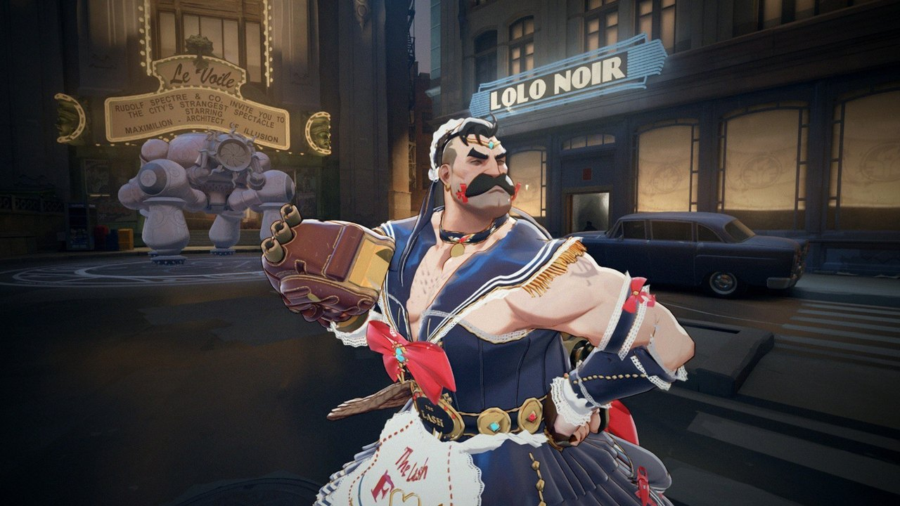
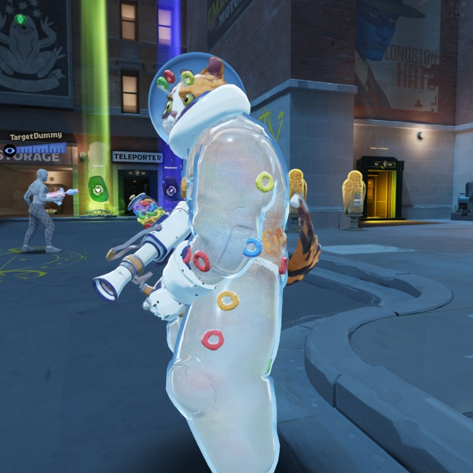
What happens to a mod
A Deadlock skin is a set of files that replace the game's own. These are the five things Magician does with them, shown on skins it was used to make.
Check every file the way the game will read it
Magician opens each file in the mod, puts it beside Valve's file at the same path in the build you have installed, and says what a player would see if it shipped. What Valve's own file already does is never blamed on the mod.
A material the mod points at isn't in the mod or the game.
In game: a pink checkerboard where the cloth should be.
M030 dangling-ref · errorThe mod ships the hero's skeleton instead of keeping Valve's.
In game: it works until the next patch, then the hero breaks.
M070 ships-protected-file · errorA single-sided hem has an opening in it.
In game: from below, you look straight through the skirt.
M102 open-sheet-void · warningAll 81 rules
Fair play
Some players don't mind what an enemy looks like as long as they know where to shoot. Others want a skin that changes nothing about how the hero reads in a fight. Magician compares a skin with the stock hero so those players can check before they install.
If you make skins, the same numbers show how far a part goes past the limit and where. You can pull it back in, or keep it and write down why while it stays under the limit. Maid Lash's skirt and the Rem skin's ears were tuned this way. Three of the measurements:
The shape
Magician decodes every triangle of the skin and of Valve's model and draws both as the game would, from the front and the side.
A hero that comes out under 97% of the stock hero's area in any view is harder to see, and that is a finding.
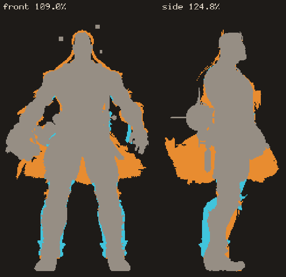
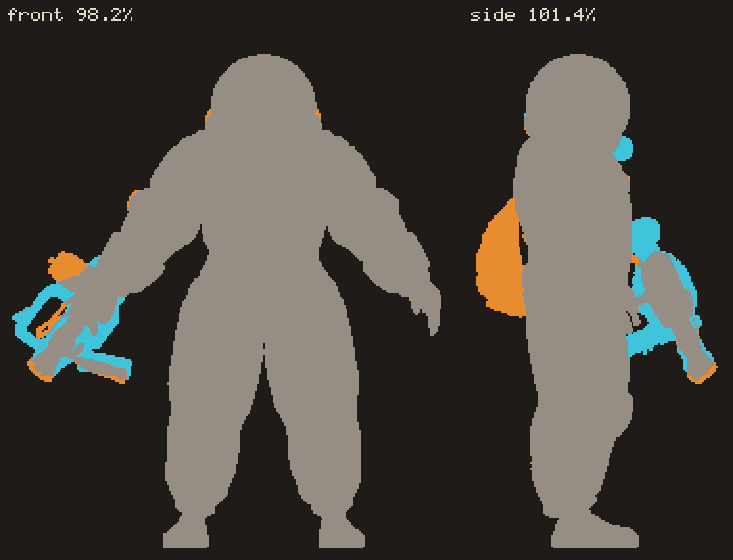
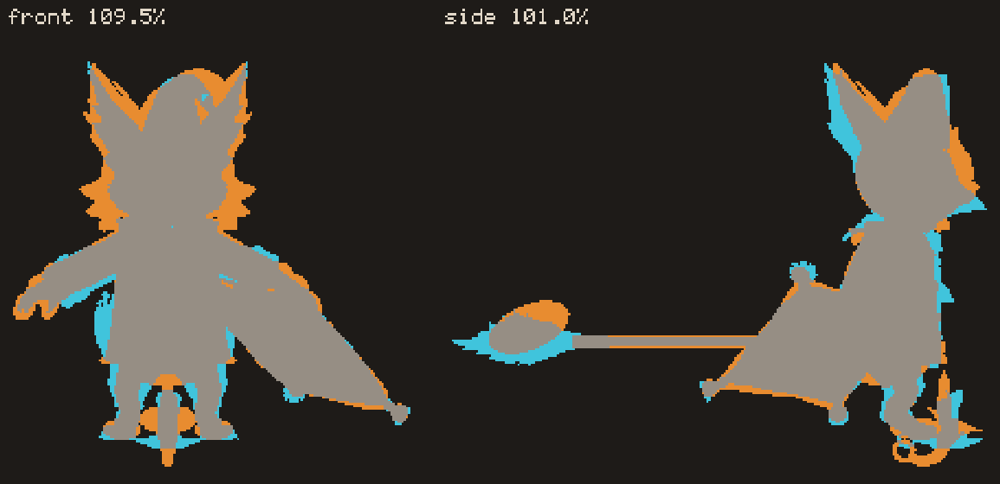
The output
Where shots land
The game decides hits with invisible capsules around the body. Cloth that reaches far past them is something enemies aim at and can't hit.
Magician measures how far the skin reaches past the capsules, counting only what the stock hero doesn't already do. On this old-cartoon Rem the nightcap and the tips of the ears stand out. They are under the line, so they were accepted with a written reason.
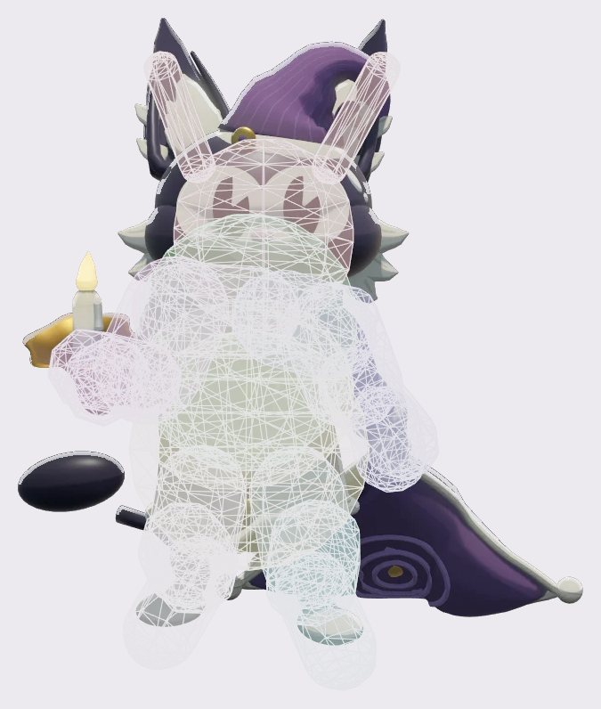
Past either line, no written reason can accept it, and the grade marks the skin not safe for ranked.
The output
The cues
An ability's effect tells enemies where it lands and how big it is. A skin can restyle it, but not shrink it, hide it, or make it so bright it covers the fight.
Magician measures an effect's size and brightness against Valve's. Here are Valve's blast and the skin's at the same moments: restyled, the same sphere.
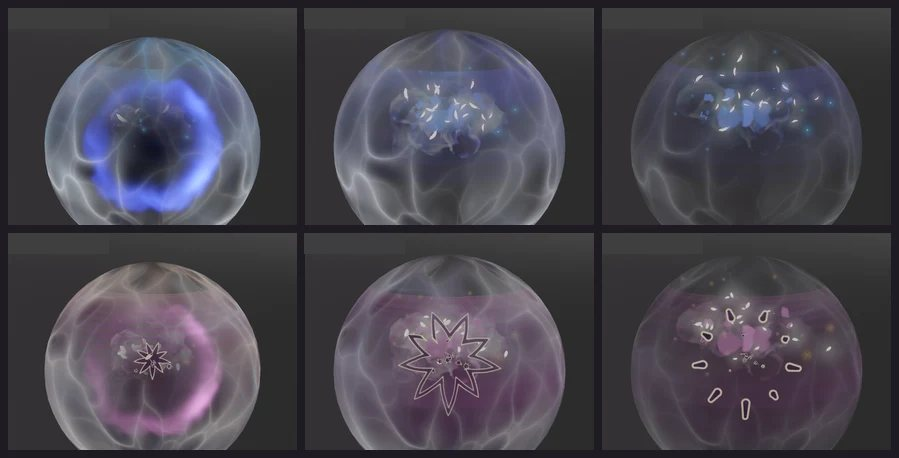
Look at it in the game
A clean check is not the end. Some things only show when the hero moves. Magician launches the real game, plays the mod's own scenarios and cuts every take into a contact sheet. Then someone looks: a person, or an agent that can read images. The game's console log is held against a run without the mod, so a new warning stands out.
What the look caught
Close under Maid Lash's petticoat, flat orange flaps of his own skin stood off both thighs. The next build fixed the fit.
Drag to compare.
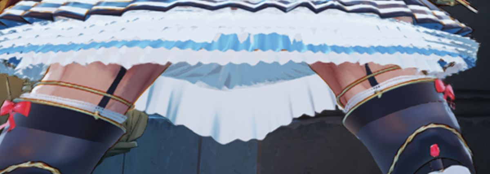
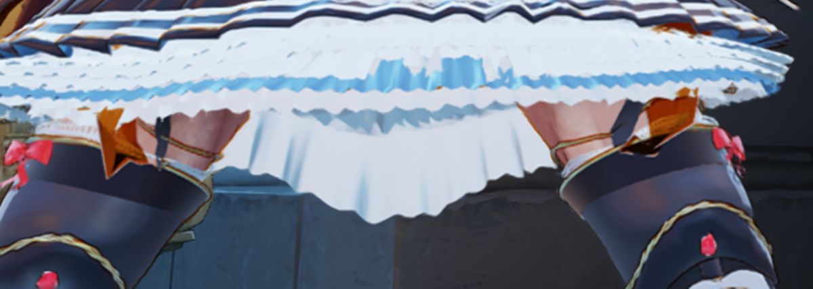
beforeafterThe sheets
Each scenario is a take: a run down the street, every ability, every angle. A sheet puts a take's frames side by side so motion can be read at a glance.
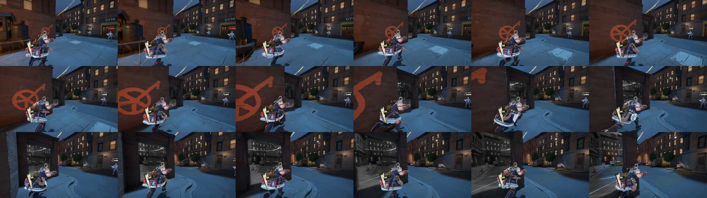
lash_motion: ok · NEW warnings with the mod (0)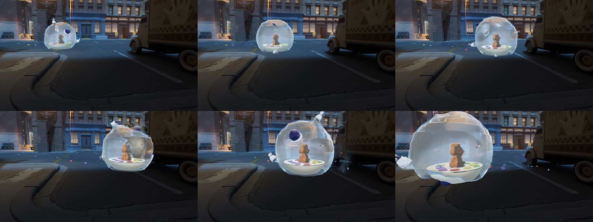
Swipe a sheet to see every frame.
Record the proof
Once the frames have been looked at, Magician records the proof: this game build, these exact bytes. Rebuild the mod and it starts unproven again, so nothing ships on an old proof.
The pak Maid Lash ships today
Release 1.0.2 was first seen in game on build 6868. The builds before it have proofs too, but of older paks, so they count for nothing here. When build 6871 came out, the same bytes needed a new look.
The ledger
| build | date | owner | file | crc32 |
|---|
Maid Lash's proofs.tsv, without its hash and evidence columns. Every rebuild of the pak is a new crc; the rows of the pak installed now are lit.
Survive the patch
Valve updates Deadlock often, and an update can break a skin without a word. On an always-on machine, a scheduled job sees the new build and runs one command, offline. In a few seconds it knows what changed under every installed mod and what has to be looked at again.
Mine is called Understudy. It watches Steam for each new build and checks every release against its proofs. Not public yet.
Build 6871
Valve changed the game's code and edited the heroes' data. Nothing either skin replaces or leans on moved. So both still load, and since the code that draws them is new, both get a look in game before they're proven on 6871.
client.dll, server.dllThe output
Clear: every mod is proven on the installed build.
Re-prove: everything loads, and the mods it names need a look in game. This one.
Broken, as in a drill where a bone of Lash's skeleton was renamed: bone 'spine_1' is now 'spine_1_renamed'.
All of it, in one command
magician check in a mod's folder runs all five and gives one verdict. The same pak, on the build it was proven on and on the next one:
The output
Built for the machine that's still running when nobody is
No windows and no prompts. Commands read files and print text, or one JSON document when a machine is reading. The same paks, build and policy give the same answer, byte for byte.
It isn't a mod loader. Deadlock Mod Manager does that well, and what Magician builds installs through it.
| exit 0 | Clean. Nothing to do. |
| exit 1 | Broken. Something has to be fixed before it ships. |
| exit 2 | Usage error: bad arguments, a missing file, a tool that isn't there. |
| exit 3 | Refused on purpose, nothing changed: an install with lint errors, a game someone else is using. |
| exit 4 | Re-prove. It loads, but has to be seen in game on this build. |
| exit 5 | An update is available. Magician never looks unless you ask. |
--json on the commands a script reads, each document named by its schema.Get it
You need Windows 10 or 11, or Linux on x86-64, and Deadlock installed through Steam.
Take a release: one folder per platform. Unpack it anywhere; deleting it is the uninstall. Or build it from source with a stable Rust toolchain: